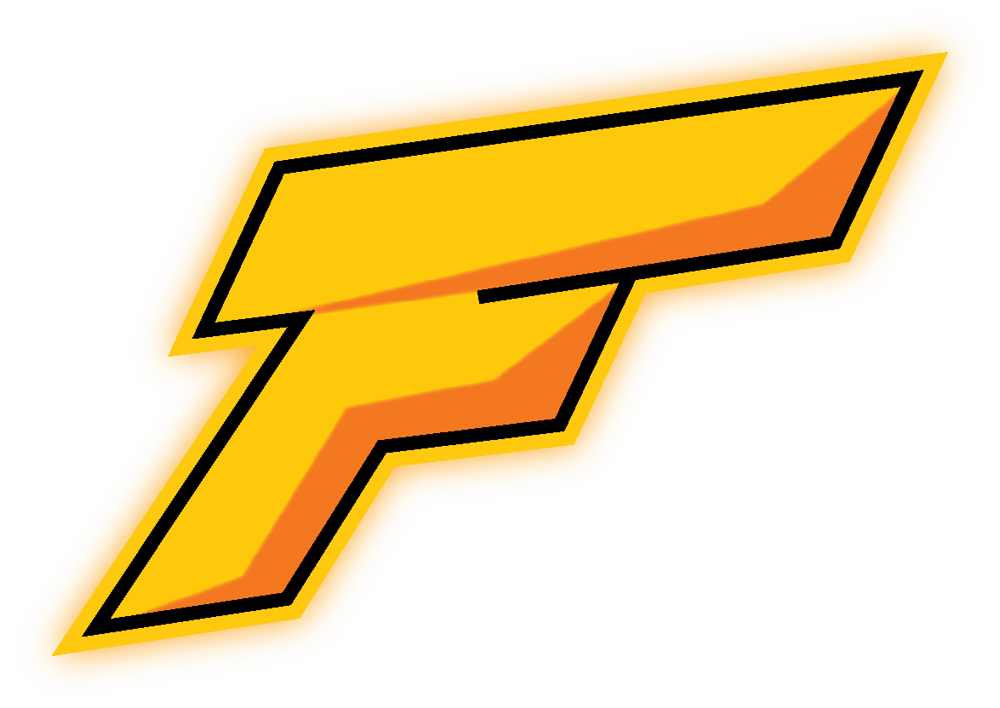

About us!
Flanba Network, a one of a kind Minecraft Bedrock server...
Our team at Flanba consists of 6 employees, and many volunteers, Started development in late december of 2021, the server is created by players for the players.
Our main goal at Flanba is to create a fun and entertaning server for the community to play, and enjoy with their friends, families as well as to meet new people. We want to give our players the best experience possible so we are always developing new updates, adding new maps and pushing new content to the server.
This server would not be possible without our investors, thank you to salad.com, witherhosting.com and our parent company sicromgmt.com!